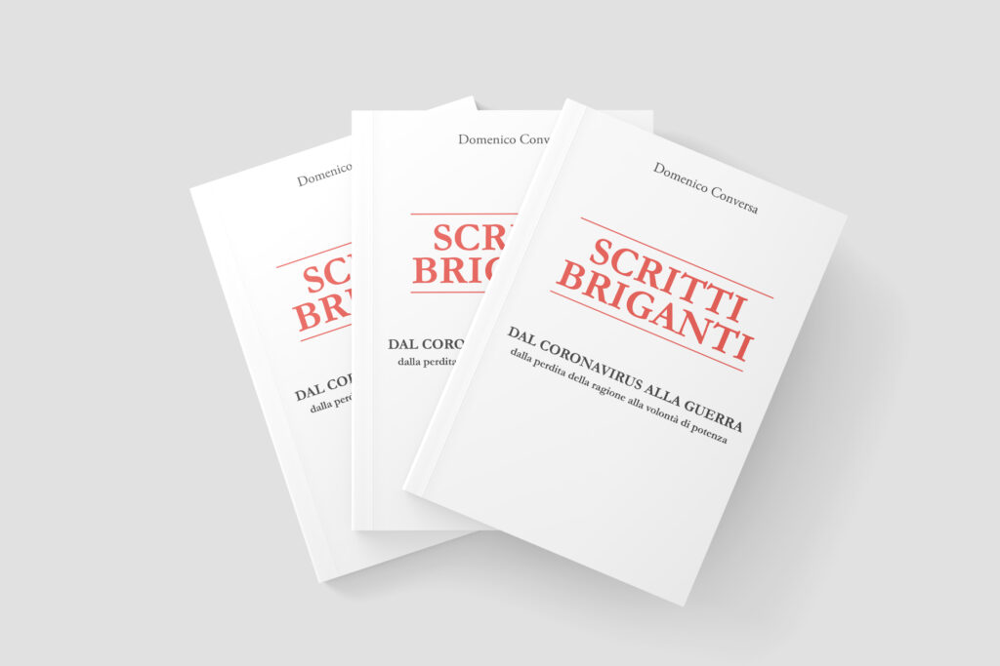
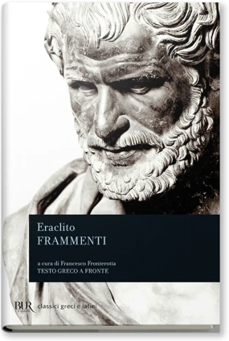
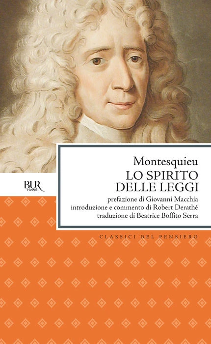
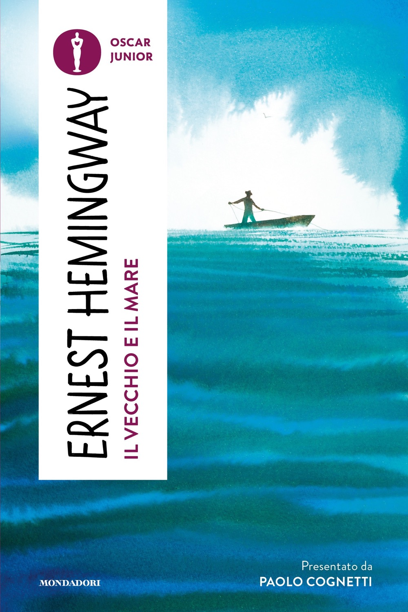
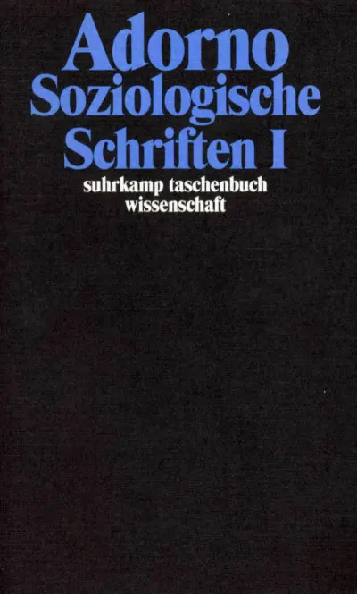
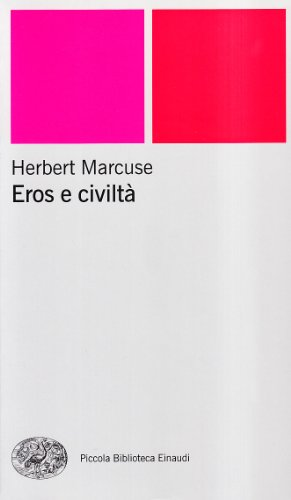

1:05:11 · 20 OPERE
Scritti Briganti: Crisi e modernità.
Il filo del discorso
Il video è una conversazione fra Dr Divago e l’avvocato Domenico Conversa a partire da Scritti briganti, raccolta del 2022 presentata dall’autore come un itinerario dell’inquietudine. Le prime letture del libro riguardano scene scolastiche e giudiziarie del periodo pandemico. Da questi racconti, e dalla perdita di fiducia che Conversa vi associa, il dialogo si sposta su una domanda più ampia: come può una protesta sottrarsi ai linguaggi e ai meccanismi della società che contesta?
Leggi la sintesi completaRiduci la sintesi
Il principale terreno teorico è la Scuola di Francoforte. Conversa legge Dialettica dell’illuminismo per discutere il modo in cui l’industria culturale assorbirebbe anche la resistenza; Dr Divago riprende la propria categoria dei “non libri”, testi che a suo giudizio rassicurano senza introdurre idee capaci di cambiare il lettore. Marcuse, Fromm e Lifton accompagnano il confronto fra adattamento, autonomia, organizzazione politica e uso delle etichette. L’estensione di queste categorie alla comunicazione italiana resta una lettura dei due interlocutori, non la dimostrazione di una regia unitaria o di condizioni psichiatriche collettive. La seconda parte insiste sul rapporto fra forma e sostanza: la tecnica del diritto dovrebbe mantenere il senso delle leggi, e gli strumenti di una professione dovrebbero servire la competenza senza sostituirla. Una metafora dal Vecchio e il mare riassume il rischio di conservare soltanto una struttura vuota. Conversa racconta inoltre mobilitazioni pugliesi sugli obblighi vaccinali e critica l’esito di un ricorso veneto; tali ricordi sono distinti sia dai fatti ancora da riscontrare sia dalle motivazioni effettive delle decisioni costituzionali. Le opinioni espresse sulla pandemia non sono assunte come conclusioni sanitarie: la fine di un’emergenza non ne prova l’inesistenza e l’età dei morti, da sola, non misura il suo impatto. Il finale contrappone persuasione e ricerca: attirare l’emozione, moltiplicare effetti e confermare aspettative potrebbe riprodurre proprio il modello pubblicitario criticato. L’esame socratico, la semiformazione di Adorno, Packard e un richiamo a Sciascia aiutano a formulare un’idea di cultura che abbia bisogno di tempo e ammetta lo spaesamento. Conversa collega infine lettura, educazione e Marcuse alla possibilità di immaginare una vita diversa. La fonte è una trascrizione automatica interamente letta; restano dichiarati i titoli incerti, le citazioni non localizzate e i limiti dei racconti non verificati.
I libri nel discorso

Il medico a una dimensione. La medicina tra etica e diritto
Note sul riferimento
Copertina: Un Altro Punto di Vista, 2020. Copertina autentica fornita nel sito dell’autore: titolo, sottotitolo, autore e marchio unaltropuntodivista riscontrati. Il nome della cartella web 2018 non è assunto come anno di pubblicazione. Non si attribuiscono un numero di pagine o un ISBN senza riscontro sufficiente.
Immagine autentica dell’opera, controllata visivamente; l’edizione di riferimento non è attribuita al filmato.
Titolo, autore e anno 2020 nella presentazione; ripreso il rimando a Marcuse a 500 secondi.

Scritti briganti. Dal coronavirus alla guerra: dalla perdita della ragione alla volontà di potenza
Note sul riferimento
Copertina: Youcanprint · 2022, immagine promozionale pubblicata dall’autore
Immagine originale pubblicata nella pagina Pubblicazioni di Domenico Conversa: composizione promozionale con tre esemplari e copertina anteriore interamente visibile sull’esemplare in primo piano. È dichiaratamente una composizione dell’autore, non uno scatto dell’esemplare mostrato nel video né una ricostruzione generata per il sito. Titolo, autore e sottotitolo sono leggibili; formato orizzontale conservato integralmente.
Libro centrale, autore presente; lettura di episodi da circa 126 secondi, prefazione Dr Divago e anno 2022 espliciti.

L’uomo a una dimensione
Note sul riferimento
Copertina: Einaudi, Piccola Biblioteca Einaudi, 1999
Copertina di un’edizione bibliografica dell’opera, con introduzione di Luciano Gallino. La citazione nel video resta probabile; questa edizione non vi è confermata.
Marcuse e titolo espliciti; ritorna a 2984 e 3727 secondi.

Beffe e beffatori in nome di una crisi
Note sul riferimento
Copertina: Lulu, 2021
Conversa richiama il libro di Dr Divago e la conclusione sull’irrazionalità sociale; titolo abbreviato e deformato nella trascrizione automatica.

Frammenti
Identificazione probabile
Note sul riferimento
Copertina: BUR · a cura di Francesco Fronterotta, testo greco a fronte, 2013
Immagine autentica dell’opera, controllata visivamente; l’edizione di riferimento non è attribuita al filmato.
Eraclito e due formulazioni riconoscibili, tradizionalmente DK B49 e B121. L’immagine rappresenta una raccolta moderna; non identifica la copia del video.

I cosiddetti sani
Identificazione probabile
Note sul riferimento
Copertina: Mondadori, 1997 · Oscar saggi
Fromm e patologia della normalità sono espliciti; la formula è il sottotitolo del libro.

Fuga dalla libertà
Note sul riferimento
Copertina: Mondadori, 2022
Titolo e autore pronunciati nel confronto sull’adattamento.

Dialettica dell’illuminismo
Note sul riferimento
Copertina: Einaudi, Piccola Biblioteca Einaudi, 2010
Edizione illustrativa dell'opera, con traduzione di Renato Solmi e introduzione di Carlo Galli; non identificata nel video.
Titolo e capitolo sull’industria culturale espliciti, con lettura attribuita a pagina 139 di un’edizione non accertata.

La società del contrario
Note sul riferimento
Copertina: Zambon · 2005
Copertina autentica dell’edizione di riferimento, controllata visivamente. Non identifica l’esemplare letto o citato nel video.
Titolo esplicito e discussione dei non libri; ripreso da Conversa a 2636 secondi.

Metafisiche del mondo
Note sul riferimento
Copertina: Copertina riprodotta nella recensione di Domenico Conversa
Titolo esplicito nella riflessione su alba e tramonto; ripetuto a 2641 secondi. L’anno ricordato oralmente non viene imposto ai dati bibliografici.

Thought Reform and the Psychology of Totalism. A Study of “Brainwashing” in China
Identificazione probabile
Note sul riferimento
Copertina: University of North Carolina Press · ristampa 1989 con nuova prefazione
Copertina autentica scaricata dal servizio immagini collegato direttamente al catalogo UNC Press per ISBN 9780807842539. Titolo completo, autore e nuova prefazione sono visibili. Si distingue la ristampa cartacea 1989 dalla prima Norton 1961 e dall’ebook 2012 ISBN 9780807882887; quest’ultimo ISBN non è assegnato all’immagine cartacea. Immagine conservata intera.
Lifton, studio del lavaggio del cervello in Cina e thought-terminating clichés a 1762 secondi identificano l’opera; edizione non verificata.

Arcipelago Gulag
Identificazione probabile
Note sul riferimento
Copertina: Mondadori · Arcipelago Gulag · edizione di riferimento
Immagine associata all’ISBN di riferimento e controllata visivamente; edizione e traduzione non identificate come quelle citate o lette nel video.
Solženicyn e lettura sul timore degli arresti e sull’innocenza identificano probabilmente la sezione iniziale; titolo del volume mostrato non trascritto dalla trascrizione automatica.

Lo spirito delle leggi
Note sul riferimento
Copertina: BUR · 1989 · a cura di Robert Derathé · edizione in due volumi
Immagine ufficiale dell’edizione BUR in due volumi; non mostra l’intera coppia di esemplari e non identifica l’edizione del video.
Montesquieu e il titolo francese/italiano sono espliciti.

Il vecchio e il mare (The Old Man and the Sea)
Note sul riferimento
Copertina: Mondadori · Oscar Junior 2024, presentazione Paolo Cognetti
Copertina originale del catalogo Ragazzi Mondadori, Oscar Junior 2024: autore, titolo e presentazione di Paolo Cognetti sono leggibili. È una ristampa successiva al video 2022, dichiarata e non attribuita al suo esemplare; non è un adattamento illustrato autonomo. La pagina mostra un ISBN troncato a dodici cifre, mentre il suo indirizzo canonico riporta l’intero 9788804792581, con cifra di controllo valida.
Titolo pronunciato e richiamo al pesce ridotto alla lisca; autore riscontrato nel catalogo editoriale.

Theorie der Halbbildung (Teoria della semiformazione)
Note sul riferimento
Copertina della raccolta Soziologische Schriften I, volume 8: Saggio del 1959. Copertina della raccolta Gesammelte Schriften, volume 8: Soziologische Schriften I, a cura di Rolf Tiedemann, Suhrkamp Taschenbuch Wissenschaft 1708, ISBN 9783518293089, 587 pagine. La ristampa corrente del catalogo è del 10 marzo 2023; il volume raccolto originario è del 1972, non il saggio. Il testo esiste anche come volume autonomo Suhrkamp del 2006, ISBN 9783518068519, distinto dall’immagine utilizzata.
Copertina autentica Suhrkamp, vista interamente, con autore e titolo della raccolta. Il sommario editoriale include Theorie der Halbbildung. Non è una copertina del saggio nel 1959 o del volume autonomo 2006; l’esemplare del relatore non è determinato.
Adorno, il titolo tedesco e la traduzione del Melangolo sono espliciti. L’immagine rappresenta una raccolta distinta dall’edizione italiana del singolo saggio.

I persuasori occulti
Note sul riferimento
Copertina: Einaudi · ET Saggi · 2015 · traduzione di Carlo Fruttero
Immagine autentica dell’opera, controllata visivamente; l’edizione di riferimento non è attribuita al filmato.
Titolo e Vance Packard espliciti, nonostante deformazione della trascrizione automatica del nome.

La Sicilia come metafora
Identificazione probabile
Note sul riferimento
Fotografia dell’esemplare · Mondadori 1979: Fotografia della copertina Mondadori 1979, Immagine presente: ritratto fotografico di Sciascia, cornice rossa e nome di Marcelle Padovani. Nessun ISBN moderno ricavato per supposizione dalla prima edizione.
Immagine autentica dell’opera, controllata visivamente; l’edizione di riferimento non è attribuita al filmato.
Sciascia e intervista con Marcelle Padovani; titolo non pronunciato, riconduzione probabile all’intervista.

Bibbia
Note sul riferimento
Copertina: San Paolo, 2014 · Nuova Versione dai Testi Antichi · edizione di riferimento
Corpus nominato nell’aneddoto di un video divulgativo in un minuto; nessuna edizione o traduzione stabilita.

Eros e civiltà (Eros and Civilization)
Note sul riferimento
Copertina: Einaudi · Piccola Biblioteca Einaudi 107, ISBN 9788806159009
Copertina autentica distribuita per ISBN nel catalogo AbeBooks: frontale intero con autore, titolo, marchio Piccola Biblioteca Einaudi e due riquadri rosa/rosso. ISBN e collana sono riscontrati nel listino dell’editore e nella scheda libraria Tlon; la ristampa non è assegnata alla copia del video. L’immagine generica del logo Tlon non viene usata come copertina.
Marcuse e titolo espliciti, distinto da L’uomo a una dimensione.

La tolleranza repressiva
Identificazione probabile
Note sul riferimento
Copertina: Mimesis · Minima / Volti · 2011 · Critica della tolleranza
Copertina dell’edizione italiana del saggio intitolata Critica della tolleranza, firmata dal solo Marcuse. Non è la raccolta Einaudi dei tre autori; nessuna edizione è attribuita al video.
Formula esplicita nel ragionamento marcusiano; richiamo probabile al saggio, ma può indicare soltanto il concetto. Nessuna edizione attribuita.